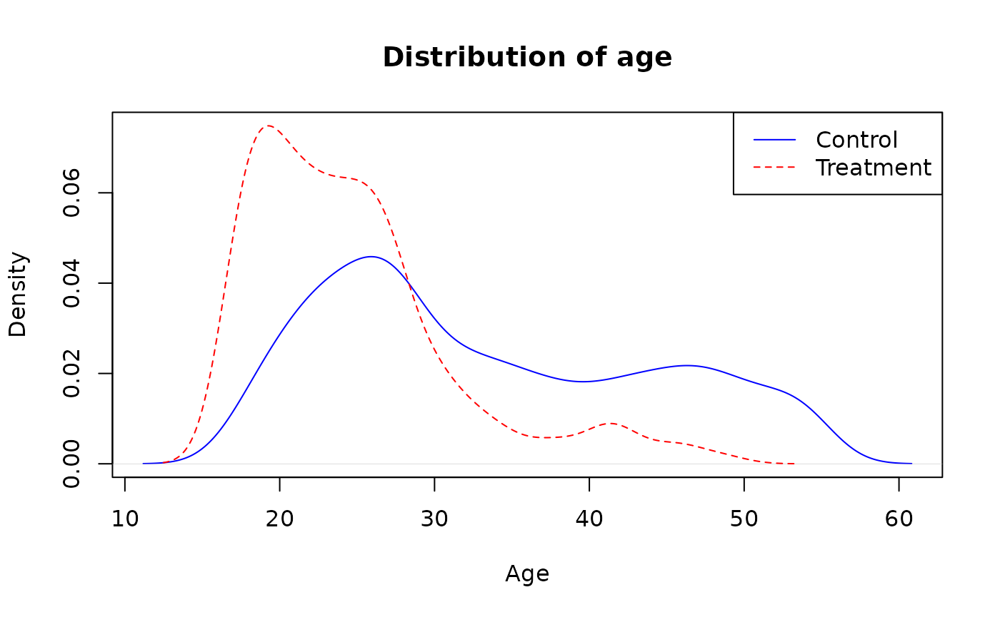
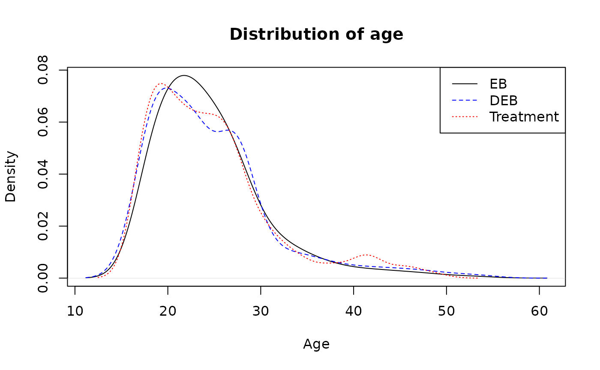
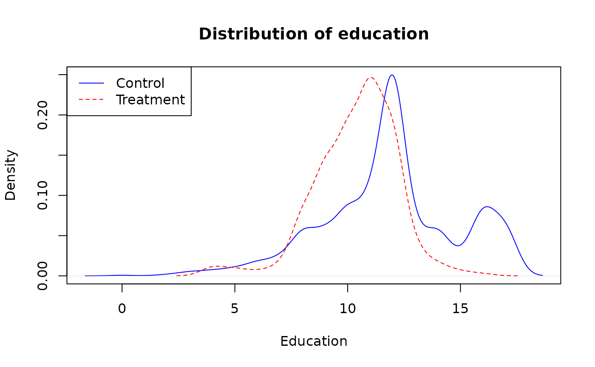
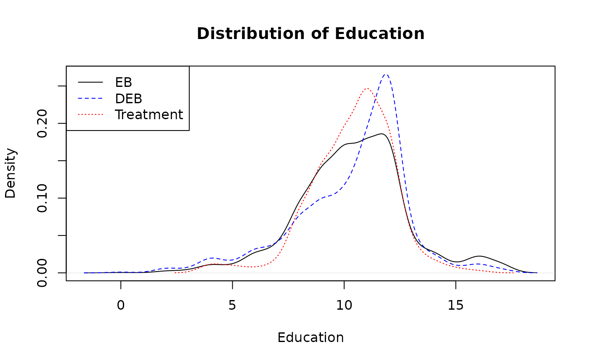
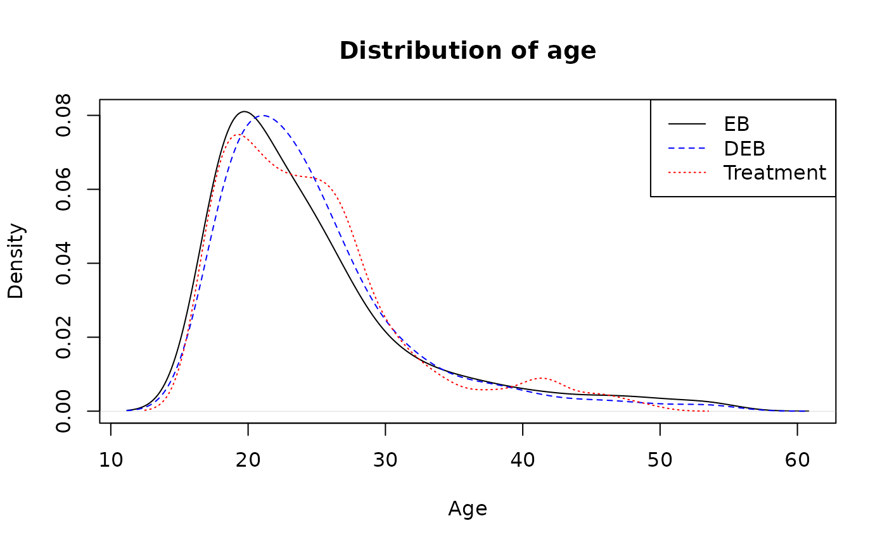
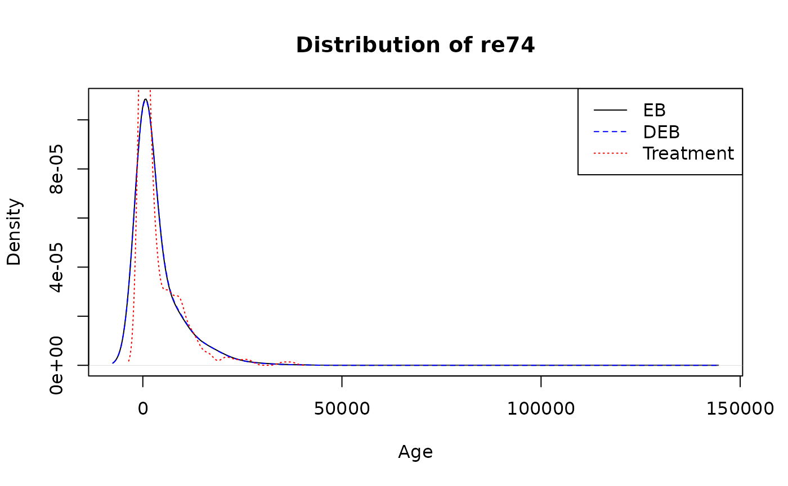

Balancing distributions for observational studies
Maciej Beręsewicz
Source:vignettes/d_causal.Rmd
d_causal.RmdTheory
Distributional entropy balancing
Our proposal, which leads to distributional entropy balancing (hereinafter DEB), is based on extending the original idea by adding additional constraint(s) on the weights on \(\mathbf{a}_k\), as presented below.
\[ \begin{aligned} \max _{w} H(w)=- & \sum_{k \in s_0} v_{k} \log \left(v_{k} / q_{k}\right), \\ \text { s.t. } & \sum_{k \in s_0} v_{k} G_{k j}=m_{k} \text { for } j \in 1, \ldots, J_1, \\ & \sum_{k \in s_0} v_{k} a_{k j}=\frac{\alpha_{j}}{n_1} \text { for } j \in 1, \ldots, J_2, \\ & \sum_{k \in s_0} v_{k}=1 \text { and } v \geq 0 \text { for all } k \in s_0. \end{aligned} \]
Distributional propensity score method
(imai2014covariate?) proposed covariate balancing propensity score (CBPS) to estimate the (eqref?){eq-ate}, where unknown parameters of the propensity score model \(\mathbf{\gamma}\) are estimated using the generalized method of moments as
\[ \mathbb{E}\left[\left(\frac{\mathcal{D}}{p\left(\mathbf{X}; \mathbf{\gamma}\right)}-\frac{1-\mathcal{D}}{1-p\left(\mathbf{X}; \mathbf{\gamma}\right)}\right) f(\mathbf{X})\right]=\mathbf{0}, \label{eq-cbps} \]
where \(p()\) is the propensity score. This balances means of the the \(\mathbf{X}\) variables, which may not be sufficient if the variables are highly skewed or we are interested in estimating DTE or QTE.
We propose a simple approach based on the specification of moments and \(\alpha\)-quantiles to be balanced. Instead of using the matrix \(\mathbf{X}\), we propose to use the matrix \(\mathcal{X}\), which is constructed as follows
\[ \mathcal{X} = \begin{bmatrix} \mathbf{1}^1 & \mathbf{X}^1 & \mathbf{A}^1\\ \mathbf{1}^0 & \mathbf{X}^0 & \mathbf{A}^0\\ \end{bmatrix}, \]
where \(\mathbf{X}^0, \mathbf{X}^1\) are matrices of size \(n_0 \times J_1\) and \(n_1 \times J_1\) with \(J_1\) covariates to be balanced at the means, and \(\mathbf{A}^1, \mathbf{A}^0\) are matrices with are based on \(J_2\) covariates with elements defined as follows
\[ a^1_{kj}=\left\{\begin{array}{lll} n_1^{-1},& \quad x_{kj}^1\leq L_{x_{j},1}\left(q^1_{x_{j},\alpha}\right),\\ n_1^{-1}\beta_{x_{j},1}\left(q^1_{x_{j},\alpha}\right), & \quad x_{kj}^1=U_{x_{j},1}\left(q^1_{x_{j},\alpha}\right),\\ 0,& \quad x^1_{kj}> U_{x_{j},1}\left(q^1_{x_{j},\alpha}\right),\\ \end{array} \right. \]
and
\[ a^0_{kj}=\left\{\begin{array}{lll} n_1^{-1},& \quad x_{kj}^0\leq L_{x_{j},0}\left(q^1_{x_{j},\alpha}\right),\\ n_1^{-1}\beta_{x_{j},0}\left(q^1_{x_{j},\alpha}\right), & \quad x_{kj}^0=U_{x_{j},0}\left(q^1_{x_{j},\alpha}\right),\\ 0,& \quad x^0_{kj}> U_{x_{j},0}\left(q^1_{x_{j},\alpha}\right),\\ \end{array} \right. \]
where \(n_1\) is the size of the treatment group, or alternatively the logistic function \(\eqref{eq-logistic-a}\) can be used.
Packages
Load packages for the example
library(jointCalib)
library(CBPS)
#> Loading required package: MASS
#> Loading required package: MatchIt
#> Loading required package: nnet
#> Loading required package: numDeriv
#> Loading required package: glmnet
#> Loading required package: Matrix
#> Loaded glmnet 4.1-8
#> CBPS: Covariate Balancing Propensity Score
#> Version: 0.23
#> Authors: Christian Fong [aut, cre],
#> Marc Ratkovic [aut],
#> Kosuke Imai [aut],
#> Chad Hazlett [ctb],
#> Xiaolin Yang [ctb],
#> Sida Peng [ctb],
#> Inbeom Lee [ctb]
library(ebal)
#> ##
#> ## ebal Package: Implements Entropy Balancing.
#> ## See http://www.stanford.edu/~jhain/ for additional information.
library(laeken)Read the the LaLonde data from the CBPS
package.
data("LaLonde", package = "CBPS")
head(LaLonde)
#> exper treat age educ black hisp married nodegr re74 re75 re78 re74.miss
#> 298 0 0 47 12 0 0 0 0 0 0 0 0
#> 299 0 0 50 12 1 0 1 0 0 0 0 1
#> 300 0 0 44 12 0 0 0 0 0 0 0 0
#> 301 0 0 28 12 1 0 1 0 0 0 0 1
#> 302 0 0 54 12 0 0 1 0 0 0 0 1
#> 303 0 0 55 12 0 1 1 0 0 0 0 1ATT with entropy balancing and other methods
Single variable: age
First, we start with the age variable. Below we can find
the distribution of age in the control and treatment group.
dens0 <- density(LaLonde$age[LaLonde$treat == 0])
dens1 <- density(LaLonde$age[LaLonde$treat == 1])
plot(dens0, main="Distribution of age", xlab="Age", ylim=c(0, max(dens0$y, dens1$y)), col = "blue")
lines(dens1, lty=2, col="red")
legend("topright", legend=c("Control", "Treatment"), lty=c(1,2), col=c("blue", "red"))
Basic descriptive statistics are given below.
aggregate(age ~ treat, data = LaLonde, FUN = quantile)
#> treat age.0% age.25% age.50% age.75% age.100%
#> 1 0 17.0 25.0 31.0 42.5 55.0
#> 2 1 17.0 20.0 23.0 27.0 49.0Nowe, let’s use ebal::ebalance and
jointCalib::joint_calib_att with method eb (it
uses uses ebal package as backend). For DEB we use deciles
probs = seq(0.1, 0.9, 0.1) and balance mean as well
(formula_means = ~ age). The output informs that about the
target (totals) quantiles and difference between balanced
and the target quantities (column precision).
bal_standard <- ebalance(LaLonde$treat, X = LaLonde[, "age"])
#> Converged within tolerance
bal_quant <- joint_calib_att(formula_means = ~ age,
formula_quantiles = ~ age,
treatment = ~ treat,
data = LaLonde,
probs = seq(0.1, 0.9, 0.1),
method = "eb")
bal_quant
#> Weights calibrated using: eb with ebal backend.
#> Summary statistics for g-weights:
#> Min. 1st Qu. Median Mean 3rd Qu. Max.
#> 0.007665 0.022555 0.046914 0.101888 0.194177 0.605874
#> Totals and precision (abs diff: 0.1299956)
#> totals precision
#> N 297.0 2.632778e-03
#> age 0.10 0.1 1.688971e-10
#> age 0.20 0.2 3.377950e-10
#> age 0.30 0.3 5.067252e-10
#> age 0.40 0.4 3.901260e-09
#> age 0.50 0.5 6.496023e-09
#> age 0.60 0.6 1.144491e-08
#> age 0.70 0.7 3.277056e-08
#> age 0.80 0.8 5.172449e-08
#> age 0.90 0.9 1.811425e-07
#> age 7314.0 1.273625e-01Compare weighted distributions with treatment group distribution.
dens0 <- density(LaLonde$age[LaLonde$treat == 0], weights = bal_standard$w/sum(bal_standard$w))
#> Warning in density.default(LaLonde$age[LaLonde$treat == 0], weights =
#> bal_standard$w/sum(bal_standard$w)): Selecting bandwidth *not* using 'weights'
dens1 <- density(LaLonde$age[LaLonde$treat == 0], weights = bal_quant$g/sum(bal_quant$g))
#> Warning in density.default(LaLonde$age[LaLonde$treat == 0], weights =
#> bal_quant$g/sum(bal_quant$g)): Selecting bandwidth *not* using 'weights'
dens2 <- density(LaLonde$age[LaLonde$treat == 1])
plot(dens0, main="Distribution of age", xlab="Age", ylim=c(0, max(dens0$y, dens1$y)))
lines(dens1, lty=2, col="blue")
lines(dens2, lty=3, col="red")
legend("topright",
legend=c("EB", "DEB", "Treatment"),
lty=c(1,2, 3),
col=c("black", "blue", "red"))
Compare balancing weights.
More variables
Now, consider three variables: married, age
and educ.
dens0 <- density(LaLonde$educ[LaLonde$treat == 0])
dens1 <- density(LaLonde$educ[LaLonde$treat == 1])
plot(dens0, main="Distribution of education", xlab="Education", ylim=c(0, max(dens0$y, dens1$y)), col = "blue")
lines(dens1, lty=2, col="red")
legend("topleft", legend=c("Control", "Treatment"), lty=c(1,2), col=c("blue", "red"))
The code below balances control and treatment group on age and educ means and quantiles.
bal_standard <- ebalance(LaLonde$treat, X = LaLonde[, c("married", "age", "educ")])
#> Converged within tolerance
bal_quant <- joint_calib_att(formula_means = ~ married + age + educ,
formula_quantiles = ~ age + educ,
treatment = ~ treat,
data = LaLonde,
method = "eb")
bal_quant
#> Weights calibrated using: eb with ebal backend.
#> Summary statistics for g-weights:
#> Min. 1st Qu. Median Mean 3rd Qu. Max.
#> 0.0003863 0.0075341 0.0258057 0.1018874 0.0606804 2.8081281
#> Totals and precision (abs diff: 0.08993871)
#> totals precision
#> N 297.00 1.646454e-03
#> age 0.25 0.25 6.697796e-08
#> age 0.50 0.50 1.541813e-07
#> age 0.75 0.75 4.802355e-07
#> educ 0.25 0.25 2.806495e-06
#> educ 0.50 0.50 3.414877e-06
#> educ 0.75 0.75 4.188730e-06
#> married 50.00 8.466613e-04
#> age 7314.00 7.261357e-02
#> educ 3083.00 1.482091e-02Compare distribution education (educ) variable.
dens0 <- density(LaLonde$educ[LaLonde$treat == 0], weights = bal_standard$w/sum(bal_standard$w))
#> Warning in density.default(LaLonde$educ[LaLonde$treat == 0], weights =
#> bal_standard$w/sum(bal_standard$w)): Selecting bandwidth *not* using 'weights'
dens1 <- density(LaLonde$educ[LaLonde$treat == 0], weights = bal_quant$g/sum(bal_quant$g))
#> Warning in density.default(LaLonde$educ[LaLonde$treat == 0], weights =
#> bal_quant$g/sum(bal_quant$g)): Selecting bandwidth *not* using 'weights'
dens2 <- density(LaLonde$educ[LaLonde$treat == 1])
plot(dens0, main="Distribution of Education", xlab="Education", ylim=c(0, max(dens0$y, dens1$y)))
lines(dens1, lty=2, col="blue")
lines(dens2, lty=3, col="red")
legend("topleft",
legend=c("EB", "DEB", "Treatment"),
lty=c(1,2, 3),
col=c("black", "blue", "red"))
Compare distribution age (age) variable.
dens0 <- density(LaLonde$age[LaLonde$treat == 0], weights = bal_standard$w/sum(bal_standard$w))
#> Warning in density.default(LaLonde$age[LaLonde$treat == 0], weights =
#> bal_standard$w/sum(bal_standard$w)): Selecting bandwidth *not* using 'weights'
dens1 <- density(LaLonde$age[LaLonde$treat == 0], weights = bal_quant$g/sum(bal_quant$g))
#> Warning in density.default(LaLonde$age[LaLonde$treat == 0], weights =
#> bal_quant$g/sum(bal_quant$g)): Selecting bandwidth *not* using 'weights'
dens2 <- density(LaLonde$age[LaLonde$treat == 1])
plot(dens0, main="Distribution of age", xlab="Age", ylim=c(0, max(dens0$y, dens1$y)))
lines(dens1, lty=2, col="blue")
lines(dens2, lty=3, col="red")
legend("topright",
legend=c("EB", "DEB", "Treatment"),
lty=c(1,2, 3),
col=c("black", "blue", "red"))
Compare balancing weights.
More variables: all variables
Now consider all variables available in the LaLonde
dataset.
bal_standard <- ebalance(LaLonde$treat,
X = model.matrix(~ -1 + age + educ + black + hisp + married + nodegr + re74 + re75,
LaLonde))
#> Converged within tolerance
bal_quant <- joint_calib_att(formula_means = ~ age + educ + black + hisp + married + nodegr + re74 + re75,
formula_quantiles = ~ age + re74 + re75,
probs = 0.5,
treatment = ~ treat,
data = LaLonde,
method = "eb")
bal_quant
#> Weights calibrated using: eb with ebal backend.
#> Summary statistics for g-weights:
#> Min. 1st Qu. Median Mean 3rd Qu. Max.
#> 0.000000 0.003086 0.013909 0.101887 0.065794 1.154954
#> Totals and precision (abs diff: 0.03793366)
#> totals precision
#> N 297.0 1.080405e-06
#> age 0.50 0.5 8.307879e-10
#> re74 0.50 0.5 1.459705e-10
#> re75 0.50 0.5 4.480694e-11
#> age 7314.0 3.147376e-05
#> educ 3083.0 1.304752e-05
#> black 238.0 5.857758e-07
#> hisp 28.0 5.359394e-08
#> married 50.0 5.735295e-07
#> nodegr 217.0 3.585783e-07
#> re74 1060586.7 1.832775e-02
#> re75 910631.2 1.955873e-02Compare re74
dens0 <- density(LaLonde$re74[LaLonde$treat == 0], weights = bal_standard$w/sum(bal_standard$w))
#> Warning in density.default(LaLonde$re74[LaLonde$treat == 0], weights =
#> bal_standard$w/sum(bal_standard$w)): Selecting bandwidth *not* using 'weights'
dens1 <- density(LaLonde$re74[LaLonde$treat == 0], weights = bal_quant$g/sum(bal_quant$g))
#> Warning in density.default(LaLonde$re74[LaLonde$treat == 0], weights =
#> bal_quant$g/sum(bal_quant$g)): Selecting bandwidth *not* using 'weights'
dens2 <- density(LaLonde$re74[LaLonde$treat == 1])
plot(dens0, main="Distribution of re74", xlab="Age", ylim=c(0, max(dens0$y, dens1$y)))
lines(dens1, lty=2, col="blue")
lines(dens2, lty=3, col="red")
legend("topright",
legend=c("EB", "DEB", "Treatment"),
lty=c(1,2, 3),
col=c("black", "blue", "red"))
Compare balancing weights.
plot(x = bal_standard$w,
y = bal_quant$g,
xlab = "EB", ylab = "DEB", main = "Comparison of EB and DEB weights",
xlim = c(0, 1.2), ylim = c(0, 1.2))Compare estimates of ATT using EB and DEB.
c(EB = with(LaLonde, mean(re78[treat == 1]) - weighted.mean(re78[treat == 0], bal_standard$w)),
DEB = with(LaLonde, mean(re78[treat == 1]) - weighted.mean(re78[treat == 0], bal_quant$g)))
#> EB DEB
#> -378.4217 -392.0171Compare QTT(0.5) using EB and DEB.
c(EB = with(LaLonde, median(re78[treat == 1]) - weightedMedian(re78[treat == 0], bal_standard$w)),
DEB = with(LaLonde, median(re78[treat == 1]) - weightedMedian(re78[treat == 0], bal_quant$g)))
#> EB DEB
#> 72.39014 35.93408Compare QTT(\(\alpha\)) where \(\alpha \in \{0.1, ..., 0.9\}\).
probs_qtt <- seq(0.1, 0.9, 0.1)
data.frame(
EB = with(LaLonde,
quantile(re78[treat == 1], probs_qtt) - weightedQuantile(re78[treat == 0], bal_standard$w, probs_qtt)),
DEB = with(LaLonde,
quantile(re78[treat == 1], probs_qtt) - weightedQuantile(re78[treat == 0], bal_quant$g, probs_qtt))
)
#> EB DEB
#> 10% 0.00000 0.00000
#> 20% 0.00000 0.00000
#> 30% 788.12509 784.81613
#> 40% 265.73521 261.63315
#> 50% 72.39014 35.93408
#> 60% 156.65605 -20.31025
#> 70% -549.49531 -669.21504
#> 80% -498.36777 -498.36777
#> 90% -2818.06621 -2818.06621ATT with CBPS and DPS [work in progress]
m0 <- CBPS(formula = treat ~ age + educ + black + hisp + married + nodegr + re74,
data = LaLonde)
#> [1] "Finding ATT with T=1 as the treatment. Set ATT=2 to find ATT with T=0 as the treatment"
m1 <- joint_calib_cbps(formula_means = ~ age + educ + black + hisp + married + nodegr,
formula_quantiles = ~ re74,
probs = 0.5,
treatment = ~ treat,
data = LaLonde)